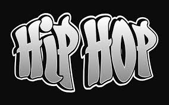

El hip hop nació el 11 de agosto de 1973 en el Bronx, Nueva York, creado por DJ Kool Herc en una fiesta vecinal al extender los "breaks" de funk con dos tocadiscos. Surgió como respuesta a la pobreza y violencia, convirtiéndose en un movimiento cultural basado en cuatro elementos: DJing, MCing (rap), breakdance y graffiti.
El hip hop es más que música; es un movimiento cultural que incorpora diversos elementos artísticos. Cuatro elementos fundamentales caracterizan la cultura hip hop. Los cuatro pilares originales del hip hop son el DJing/turntablismo, el MCing/rap, el breakdance/breaking y las artes visuales/graffiti. Estas formas de expresión también se han desarrollado en subculturas con un legado perdurable.

La confluencia de estos cuatro elementos generó una revolución cultural que se extendió rápidamente por todo el mundo. La influencia global de la cultura hip hop ha moldeado estilos musicales, moda, tecnología, arte, entretenimiento, idiomas, danza, educación, política, medios de comunicación y mucho más. Hasta el día de hoy, el hip hop sigue siendo un fenómeno global, desarrollando nuevas formas de arte que impactan la vida de las nuevas y viejas generaciones.